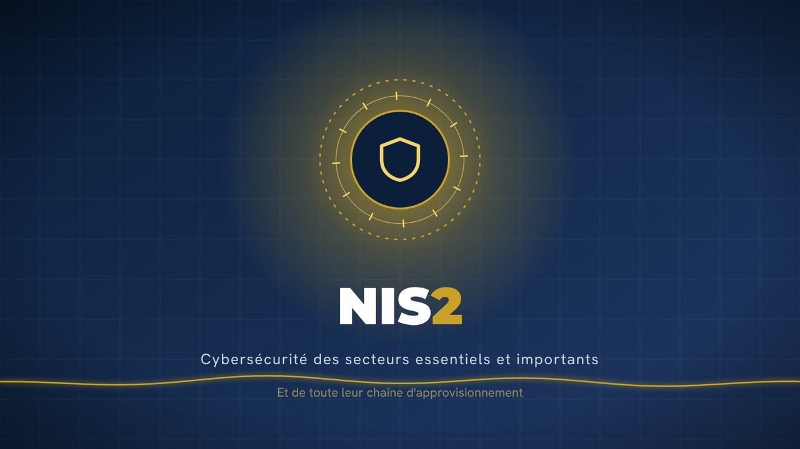

ARG
ARGARGOS › La réglementation en 4 minutes › NIS2
NIS2 en 4 minutes: France : la loi arrive
NIS2 est la directive européenne de cybersécurité des secteurs essentiels, et de leur chaîne d'approvisionnement. Attendre ne protège pas. Toute la chaîne est responsable. En France, la loi arrive.

- 0:00L'attaque
- 0:11Les amendes
- 0:28Au niveau national
- 0:51NIS2
- 1:01Quatre étapes
- 1:21Dix mesures
- 1:39Dates
- 1:58Europe
- 2:23L'autorité
- 2:40Que faire
Points clés
- 10 M€ ou 2 % du chiffre d'affaires · entités essentielles
- 17.10.2024 date limite de transposition
- 8.7.2026 renvoi devant la Cour de justice
- 17.11.2026 vote solennel à l'Assemblée
- Ensuite commission mixte paritaire
- Projet Résilience Fin du parcours parlementaire
- CJUE Saisie par la Commission (2026)
- ANSSI Référentiel et préenregistrement
Transcription
Texte complet de la voix off
0:00 · L'attaque
Lundi, six heures du matin. Les systèmes ne démarrent pas. Les fichiers sont chiffrés. Le prestataire ne répond pas. Qui prévient qui, et en combien de temps ?
0:11 · Les amendes
La directive NIS2 prévoit des amendes jusqu'à dix millions d'euros ou deux pour cent du chiffre d'affaires pour les entités essentielles. Et elle impose de notifier les incidents importants en trois temps : 24 heures, 72 heures et un mois. La direction approuve les mesures et en répond.
0:28 · Au niveau national
En France, la loi arrive. Le projet de loi Résilience termine son parcours parlementaire. La Commission a saisi la Cour de justice en juillet 2026. L'ANSSI publie déjà son référentiel et ouvre un préenregistrement. Environ 15 000 entités seront concernées. Et vos clients l'exigent déjà par contrat.
0:51 · NIS2
NIS2 est la directive européenne de cybersécurité des secteurs essentiels, et de leur chaîne d'approvisionnement. Attendre ne protège pas. Toute la chaîne est responsable.
1:01 · Quatre étapes
Ce qu'elle exige, en quatre étapes. Vérifier si l'on est concerné, essentiel ou important. S'enregistrer auprès de l'autorité nationale. Appliquer les dix mesures, approuvées par la direction. Et notifier les incidents importants dans les délais. La sécurité des fournisseurs est l'une de ces dix mesures.
1:21 · Dix mesures
Parmi les dix mesures, quatre font la différence. L'analyse des risques et les politiques de sécurité. La gestion des incidents et la continuité d'activité. La sécurité de la chaîne d'approvisionnement. Et l'authentification multifacteur et le chiffrement. Article 21 de la directive.
1:39 · Dates
Les dates françaises. 17 octobre 2024 : la date limite de transposition. 8 juillet 2026 : la France est renvoyée devant la Cour de justice. 17 novembre 2026 : le vote solennel à l'Assemblée. Et ensuite, la commission mixte paritaire.
1:58 · Europe
En Europe, NIS2 est déjà la loi dans de nombreux pays. L'Allemagne : 29 500 entités, direction responsable. L'Italie : mesures de base exigées. La Belgique : CyberFundamentals. Le Portugal : dirigeants responsables. Les Pays-Bas : sans transition. Le Danemark : supervision par secteur. La France et l'Espagne sont encore sans loi.
2:23 · L'autorité
En France, l'autorité est l'Agence nationale de la sécurité des systèmes d'information. L'ANSSI publie son référentiel ReCyf, qui montre ce qui sera exigé. Un préenregistrement est déjà ouvert. Et les entités établies ailleurs relèvent du pays de leur établissement principal.
2:40 · Que faire
Que faire maintenant. Vérifier son périmètre, s'enregistrer, appliquer les mesures, préparer les notifications et engager les fournisseurs. ARGOS le vérifie en continu, avec des sondes sur les systèmes réels et des preuves pour l'auditeur et le client. NIS2 : la cybersécurité se prouve.
Questions fréquentes
Qu’est-ce que NIS2 ?
NIS2 est la directive européenne de cybersécurité des secteurs essentiels, et de leur chaîne d'approvisionnement. Attendre ne protège pas. Toute la chaîne est responsable. La directive NIS2 prévoit des amendes jusqu'à dix millions d'euros ou deux pour cent du chiffre d'affaires pour les entités essentielles. Et elle impose de notifier les incidents importants en trois temps : 24 heures, 72 heures et un mois. La direction approuve les mesures et en répond.
Qu’exige NIS2 ?
Ce qu'elle exige, en quatre étapes. Vérifier si l'on est concerné, essentiel ou important. S'enregistrer auprès de l'autorité nationale. Appliquer les dix mesures, approuvées par la direction. Et notifier les incidents importants dans les délais. La sécurité des fournisseurs est l'une de ces dix mesures.
Quelles sont les dates clés ?
Les dates françaises. 17 octobre 2024 : la date limite de transposition. 8 juillet 2026 : la France est renvoyée devant la Cour de justice. 17 novembre 2026 : le vote solennel à l'Assemblée. Et ensuite, la commission mixte paritaire.
Quelle est la situation en France ?
En France, la loi arrive. Le projet de loi Résilience termine son parcours parlementaire. La Commission a saisi la Cour de justice en juillet 2026. L'ANSSI publie déjà son référentiel et ouvre un préenregistrement. Environ 15 000 entités seront concernées. Et vos clients l'exigent déjà par contrat. En France, l'autorité est l'Agence nationale de la sécurité des systèmes d'information. L'ANSSI publie son référentiel ReCyf, qui montre ce qui sera exigé. Un préenregistrement est déjà ouvert. Et les entités établies ailleurs relèvent du pays de leur établissement principal.
Que doit faire une entreprise dès maintenant ?
Que faire maintenant. Vérifier son périmètre, s'enregistrer, appliquer les mesures, préparer les notifications et engager les fournisseurs. ARGOS le vérifie en continu, avec des sondes sur les systèmes réels et des preuves pour l'auditeur et le client. NIS2 : la cybersécurité se prouve.
Sources officielles
- Directive (UE) 2022/2555 (NIS2) (EUR-Lex)
- Règlement d’exécution (UE) 2024/2690 (EUR-Lex)
- ANSSI
- Fiches réglementaires de Software in a Box
À voir aussi
 Data Act et DGA
Data Act et DGAData Act et DGA en 4 minutes: France : le cloud est déjà régulé
 SecNumCloud et ISO
SecNumCloud et ISOSecNumCloud et ISO en 4 minutes: Une preuve n'est pas un formulaire
 RGPD
RGPDRGPD en 4 minutes: Ce qui est le plus sanctionné, c'est l'essentiel
Voix et musique générées par intelligence artificielle (art. 50 du règlement sur l’IA). Information générale, pas un conseil juridique ; situation à novembre 2026, d’après les fiches réglementaires de Software in a Box. Clips vidéo sous licence Envato.
Pour intégrer cette présentation sur un autre site : <iframe src="https://argos.softwareinabox.eu/fr/reglementation/nis2/presentacion/?embed=1" width="960" height="540" allow="autoplay; fullscreen" title="NIS2 en 4 minutes: France : la loi arrive"></iframe> avec un lien vers cette page.
Aussi disponible en: EspañolDeutschFrançais (Belgique)ItalianoNederlandsNederlands (België)PortuguêsDansk